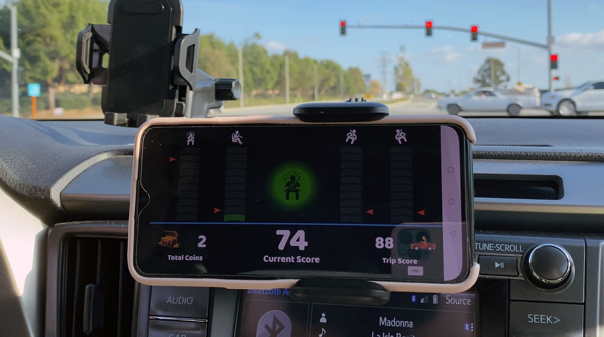

Welcome to the AIoT Systems Lab, where we are dedicated to advancing the frontiers of Artificial Intelligence and the Internet of Things.
Our mission is to develop innovative solutions that address real-world challenges, fostering a collaborative environment for researchers, students,
and industry partners. Explore our projects, publications, and events to discover how we are shaping the future of technology.

About Us
Welcome to the AIoT Systems Lab, led by Dr. Zahraa Marafie, Assistant Professor in the Department of Information Science at Kuwait University. Our lab is dedicated to advancing the integration of Artificial Intelligence (AI) and the Internet of Things (IoT) to develop innovative solutions addressing real-world challenges.
Mission
Our mission is to empower everyday devices with AI, realizing the vision of the Artificial Intelligence of Things (AIoT). We focus on core challenges related to sensing, intelligence, connectivity, efficiency, automation, scalability, privacy, inclusiveness, and applications in healthcare and sustainability.
Research Focus
Edge and Fog Intelligence: Developing efficient AI models for deployment on edge devices.
Real-Time Systems: Ensuring timely and reliable data processing for critical applications.
Service-Oriented Computing: Creating scalable and flexible service architectures.
Key Projects
AutoCoach: An intelligent driver behavior feedback system utilizing AI and IoT to enhance road safety.
HeatWatch: A real-time heat exhaustion detection system.
CarPark: A smart parking assistant application.
Business Data Analysis: Optimizing real estate operations through data-driven insights.
Collaborations
We actively collaborate with industry partners, academic institutions, and government agencies to translate research into practical applications, contributing to the advancement of AIoT technologies.
Join us in exploring the transformative potential of AI and IoT to create intelligent, connected systems that improve quality of life and drive technological innovation.
Theory and Frameworks
The AIoT Systems Lab is at the forefront of developing innovative theoretical models and frameworks to advance Artificial Intelligence and the Internet of Things. Our work bridges foundational research and practical applications to address critical challenges in connected systems and intelligent computing.
Key Focus Areas
Personality-Based Service Models: Designing intelligent IoT agents that adapt to individual user preferences and behaviors to enhance personalization.
Edge and Fog Computing Frameworks: Developing efficient AI architectures for distributed computing environments, optimizing data processing at the network edge.
Real-Time Data Processing: Building systems that enable seamless real-time analytics for time-critical applications such as healthcare and transportation.
Scalable IoT Architectures: Creating robust and scalable frameworks to support the rapid growth of IoT devices and data streams.
Recent Advances
Our lab has contributed to several breakthroughs in the integration of AI and IoT, including:
AutoCoach Framework: A system leveraging AI to provide real-time driver feedback, improving road safety through personalized analytics.
HeatWatch Algorithms: Innovative data modeling techniques for detecting and mitigating heat exhaustion using wearable sensors.
IoT Data Fusion: Advanced algorithms for combining multi-sensor data streams to provide accurate and actionable insights.
Future Directions
We aim to push the boundaries of AI and IoT by exploring:
Integrating cognitive computing with IoT for smarter decision-making.
Developing privacy-preserving frameworks to ensure secure data handling in connected systems.
Advancing human-centric AI models for adaptive and inclusive IoT environments.
Through these frameworks, the AIoT Systems Lab is laying the groundwork for intelligent, efficient, and scalable systems that address the demands of a connected world.
Educational Resources
We offer a range of resources to support learning in AI and IoT, including: